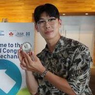

Laboratory for Advanced
Microphysiological Systems
한양대학교 생명공학과 · 미세생리시스템 연구실

We develop advanced Microphysiological Systems through a multidisciplinary approach that integrates microfluidics, 3D cell culture, and advanced biomaterials. Our platforms enable the study of disease mechanisms, drug efficacy evaluation, and personalized medicine. By bridging lab discoveries and real-world applications, we contribute to human health and to alternatives to animal testing.
우리 연구실은 미세유체기술, 3D 세포 배양, 첨단 생체재료를 통합하는 다학제적 접근을 통해 첨단 Microphysiological Systems를 개발합니다. 이러한 플랫폼은 질병 메커니즘 연구, 약물 효능 평가, 개인 맞춤형 의학 발전을 가능하게 합니다.
Our research focuses on:
- Vascularized human organ models and engineered microvascular networks
- Tumor–immune microenvironments and patient-derived disease models
- High-throughput, automation-ready organ-on-a-chip platforms for drug screening and safety assessment
- AI-enabled bioimage analysis for label-free phenotyping of complex 3D tissues
We are actively recruiting passionate and driven students
If you are interested in next-generation biomedical technologies, including microfluidics, 3D printing, 3D cell culture, and AI-based data analysis, come explore, learn, and create with us at Hanyang University. How to apply →
news
selected publications
members
Principal investigator, graduate students, undergraduate researchers and alumni.
Jihoon Ko, Ph.D. 고지훈
Assistant Professor · Department of Bioengineering, Hanyang University kchip [at] hanyang.ac.kr · ORCID 0000-0002-6555-3728His research focuses on human-relevant microphysiological systems (MPS) that integrate microengineering, vascular biology, organoids, immune systems, and AI-enabled bioimage analysis. His group builds engineered human tissue models of complex physiological and pathological microenvironments, with particular interest in vascularized organ models, tumor–immune microenvironments, high-throughput microfluidic platforms, and patient-specific disease models.
Appointments
- 2026.09–Assistant Professor, Dept. of Bioengineering, Hanyang University
- 2023.03–26.08Assistant Professor, Dept. of BioNano Technology, Gachon University
- 2021.09–23.02Research Professor, Dept. of Medicine, Sungkyunkwan University
- 2021.03–23.02Research Fellow, Hematology & Oncology, Samsung Medical Center (PI: Prof. Jeeyun Lee)
Education
- 2021Ph.D. Mechanical Engineering, Seoul National University (Advisor: Prof. Noo Li Jeon). Outstanding Doctoral Dissertation Award
- 2015B.S. Mechanical Engineering, Hanyang University
Selected honors & awards
- 2026Yamaguchi Medal – Emerging Technology, Asian Pacific Association for Biomechanics (WCB 2026)
- 2026바이오칩 젊은 인재상, The Korean BioChip Society
- 2025Young Academic Salon Award, Microsystems & Nanoengineering
- 2024Young Scientist Researcher, The Korean Society of Mechanical Engineers
- 2022 · 2020Gold Prize · Silver Prize, IBS Art in Science, Institute for Basic Science
- 2021Best Paper Award, The Korean Society of Mechanical Engineers
- 2019Best Paper Award, Korean BioChip Society · Young Researcher Session Award, IEEE-NANOMED
graduate students
undergraduate researchers
alumni
research
Our lab drives biomedical engineering to benefit society through real-world applications in healthcare, pharmaceuticals, cosmetics, and beyond.
funded projects ongoing
- Multi-organoid digital twin platform for predicting therapeutic responses in autoimmune diseases
Excellent Young Researcher Program · MSIT / NRFPI2026–2031 - Immune cell discovery platform for cancer therapy
Engineering Research Center (ERC) · MSIT / NRF · Co-Investigator2023–2030 - Microphysiological systems for immunotherapy safety evaluation
Korea ARPA-H Project · MOHW / KHIDI2024–2029 - AI-designed probiotic–nanodrug oral therapeutics for autoimmune diseases, with an MPS–semiconductor sensor evaluation platform
Nano & Future Materials Program · MSIT / NRF · Co-Investigator2026–2030 - Customized 3D biofabrication materials and components for drug safety evaluation
Materials & Components Technology Program · MOTIE / KEIT · Co-Investigator2024–2027
research areas
publications
† equal contribution · * corresponding author
under evaluation
selected
all publications
news
Papers, awards, and milestones from KOLAB.
moments
Conferences, lab meetings, and everyday life at KOLAB.
Loading gallery…
archive
contact
Seeking motivated researchers
딥러닝 기반 이미지 분석과 오가노이드 및 세포배양칩 개발에 관심있는 연구원을 모집합니다. 관심 있는 분들은 CV와 성적표를 이메일로 보내주세요.
We welcome future researchers interested in solving real-world problems together.
Hanyang University
222 Wangsimni-ro, Seongdong-gu
Seoul 04763, Republic of Korea